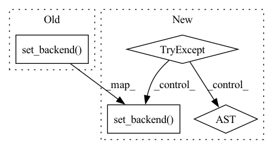

Pattern ID :620
Before Change
@pytest.fixture(scope="function")
def torchb():
tc.set_backend( "pytorch")
tc.set_dtype("float64")
yield
tc.set_backend("numpy")
tc.set_dtype("complex64")After Change
@pytest.fixture(scope="function")
def torchb():
try:
tc.set_backend( "pytorch")
tc.set_dtype("float64")
yield
except ImportError as e:
print(e)
pytest.skip("****** No torch backend found, skipping test suit *******")
tc.set_backend("numpy")In pattern: SUPERPATTERN
Frequency: 3
Non-data size: 4
Instances Fragment ID: 3001023
Project Name: tencent-quantum-lab/tensorcircuit
Commit Name: a825f47227ab199a869e649d969f7e057a9d9d98
Time: 2021-08-24
Author: kcanamgal@foxmail.com
File Name: tests/conftest.py
M Class Name: AnonimousClass
N Class Name: AnonimousClass
M Method Name: torchb(0)
N Method Name: torchb(0)
M Parent Class:
N Parent Class:
M File Name: tests/conftest.py
N File Name: tests/conftest.py
M Start Line: 28
M End Line: 30
N Start Line: 33
N End Line: 40
Before Change
@pytest.fixture(scope="function")
def jaxb():
tc.set_backend( "jax")
yield
tc.set_backend("numpy")
After Change
@pytest.fixture(scope="function")
def jaxb():
try:
tc.set_backend( "jax")
yield
except ImportError as e:
print(e)
pytest.skip("****** No jax backend found, skipping test suit *******")
Fragment ID: 3001025
Project Name: tencent-quantum-lab/tensorcircuit
Commit Name: a825f47227ab199a869e649d969f7e057a9d9d98
Time: 2021-08-24
Author: kcanamgal@foxmail.com
File Name: tests/conftest.py
M Class Name: AnonimousClass
N Class Name: AnonimousClass
M Method Name: jaxb(0)
N Method Name: jaxb(0)
M Parent Class:
N Parent Class:
M File Name: tests/conftest.py
N File Name: tests/conftest.py
M Start Line: 21
M End Line: 22
N Start Line: 21
N End Line: 28
Before Change
// this amazingly shows how to code once and run in very different AD-ML engines
tc.set_backend("tensorflow")
universal_ad()
tc.set_backend( "jax")
universal_ad()
tc.set_backend("numpy")
After Change
// this amazingly shows how to code once and run in very different AD-ML engines
tc.set_backend("tensorflow")
universal_ad()
try:
tc.set_backend( "jax")
universal_ad()
except ImportError as e:
pass
tc.set_backend("numpy")
Fragment ID: 3001024
Project Name: tencent-quantum-lab/tensorcircuit
Commit Name: a825f47227ab199a869e649d969f7e057a9d9d98
Time: 2021-08-24
Author: kcanamgal@foxmail.com
File Name: tests/test_circuit.py
M Class Name: AnonimousClass
N Class Name: AnonimousClass
M Method Name: test_ad(0)
N Method Name: test_ad(0)
M Parent Class:
N Parent Class:
M File Name: tests/test_circuit.py
N File Name: tests/test_circuit.py
M Start Line: 95
M End Line: 96
N Start Line: 95
N End Line: 100